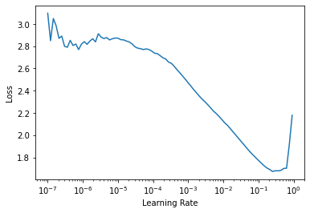
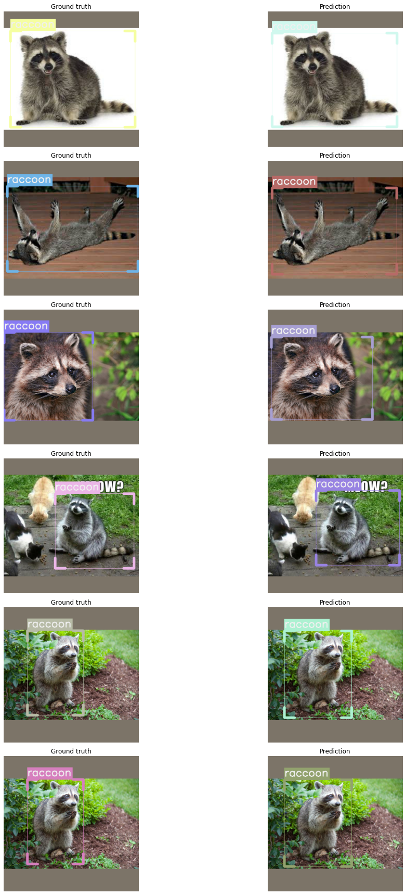

How to train a voc compatible dataset.
Note: This notebook shows a special use case of training a VOC compatible dataset using the predefined VOC parser without creating both data, and parsers files as opposed to the fridge dataset example.
Installing IceVision
!pip install icevision[all]
Clone the raccoom dataset repository
!git clone https://github.com/datitran/raccoon_dataset
Imports
from icevision.all import *
WARNING:
Make sure you have already cloned the raccoon dataset using the command shown here above
Set images and annotations directories
data_dir = Path('raccoon_dataset')
images_dir = data_dir / 'images'
annotations_dir = data_dir / 'annotations'
Define class_map
class_map = ClassMap(['raccoon'])
Parser: Use icevision predefined VOC parser
parser = parsers.voc(annotations_dir=annotations_dir, images_dir=images_dir, class_map=class_map)
train and validation records
train_records, valid_records = parser.parse()
show_records(train_records[:3], ncols=3, class_map=class_map)
Datasets
Transforms
presize = 512
size = 384
train_tfms = tfms.A.Adapter([*tfms.A.aug_tfms(size=size, presize=presize), tfms.A.Normalize()])
valid_tfms = tfms.A.Adapter([*tfms.A.resize_and_pad(size=size), tfms.A.Normalize()])
Train and Validation Dataset Objects
train_ds = Dataset(train_records, train_tfms)
valid_ds = Dataset(valid_records, valid_tfms)
samples = [train_ds[5] for _ in range(3)]
show_samples(samples, class_map=class_map, denormalize_fn=denormalize_imagenet, ncols=3)

DataLoaders
train_dl = efficientdet.train_dl(train_ds, batch_size=16, num_workers=4, shuffle=True)
valid_dl = efficientdet.valid_dl(valid_ds, batch_size=16, num_workers=4, shuffle=False)
Model
model = efficientdet.model('tf_efficientdet_lite0', num_classes=len(class_map), img_size=size)
Fastai Learner
metrics = [COCOMetric(metric_type=COCOMetricType.bbox)]
learn = efficientdet.fastai.learner(dls=[train_dl, valid_dl], model=model, metrics=metrics)
Fastai Training
Learning Rate Finder
learn.freeze()
learn.lr_find()
SuggestedLRs(lr_min=0.10964782238006592, lr_steep=0.9120108485221863)

Fine tune: 2 Phases
- Phase 1: Train the head for 5 epochs while freezing the body
- Phase 2: Train both the body and the head during 20 epochs
learn.fine_tune(20, 1e-2, freeze_epochs=5)
| epoch | train_loss | valid_loss | COCOMetric | time |
|---|---|---|---|---|
| 0 | 1.927721 | 1.351568 | 0.000867 | 00:08 |
| 1 | 1.621056 | 1.375566 | 0.002002 | 00:07 |
| 2 | 1.401676 | 1.202271 | 0.130699 | 00:07 |
| 3 | 1.176787 | 1.099883 | 0.257632 | 00:07 |
| 4 | 1.018470 | 1.031241 | 0.240425 | 00:07 |
| epoch | train_loss | valid_loss | COCOMetric | time |
|---|---|---|---|---|
| 0 | 0.549507 | 0.923337 | 0.276733 | 00:09 |
| 1 | 0.535427 | 0.802162 | 0.383750 | 00:09 |
| 2 | 0.518957 | 0.778002 | 0.402308 | 00:09 |
| 3 | 0.488329 | 0.722738 | 0.451429 | 00:09 |
| 4 | 0.469851 | 0.719689 | 0.364621 | 00:09 |
| 5 | 0.457274 | 0.583479 | 0.438622 | 00:09 |
| 6 | 0.436571 | 0.597234 | 0.424187 | 00:08 |
| 7 | 0.423843 | 0.641547 | 0.370738 | 00:09 |
| 8 | 0.407281 | 0.592756 | 0.430994 | 00:09 |
| 9 | 0.395995 | 0.550204 | 0.507850 | 00:09 |
| 10 | 0.386040 | 0.569015 | 0.408947 | 00:09 |
| 11 | 0.376276 | 0.556436 | 0.502973 | 00:10 |
| 12 | 0.368530 | 0.506910 | 0.485442 | 00:10 |
| 13 | 0.354401 | 0.557794 | 0.452313 | 00:09 |
| 14 | 0.342909 | 0.517615 | 0.488974 | 00:10 |
| 15 | 0.328028 | 0.511221 | 0.512096 | 00:09 |
| 16 | 0.320078 | 0.488857 | 0.510211 | 00:10 |
| 17 | 0.308560 | 0.489812 | 0.506092 | 00:09 |
| 18 | 0.303276 | 0.478933 | 0.524952 | 00:09 |
| 19 | 0.297155 | 0.470403 | 0.524153 | 00:10 |
Show results
efficientdet.show_results(model, valid_ds, class_map=class_map)

Note: You might train the model longer in order to increase its accuracy
Happy Learning!
If you need any assistance, feel free to join our forum.